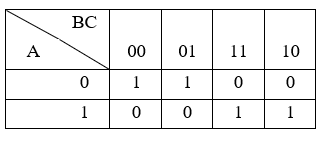
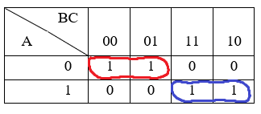
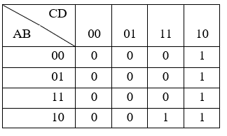
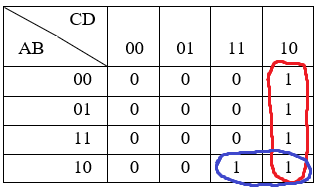
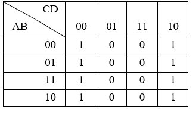
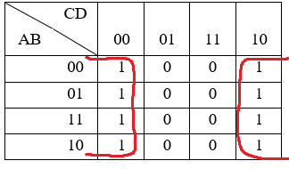

Karnaugh Maps
Example 1
3-Variable Grouping Example
| A | B | C | Output |
| 0 | 0 | 0 | 1 |
| 0 | 0 | 1 | 1 |
| 0 | 1 | 0 | 0 |
| 0 | 1 | 1 | 0 |
| 1 | 0 | 0 | 0 |
| 1 | 0 | 1 | 0 |
| 1 | 1 | 0 | 1 |
| 1 | 1 | 1 | 1 |
Corresponding Karnaugh Map:
Karnaugh Map after grouping:
From
1st Group
ABCABCAB
From
2nd Group
AB
CAB
CAB
Therefore, final expression,
F = AB + AB
Example 2
4-Variable Grouping Example
| A | B | C | D | Output |
| 0 | 0 | 0 | 0 | 0 |
| 0 | 0 | 0 | 1 | 0 |
| 0 | 0 | 1 | 0 | 1 |
| 0 | 0 | 1 | 1 | 0 |
| 0 | 1 | 0 | 0 | 0 |
| 0 | 1 | 0 | 1 | 0 |
| 0 | 1 | 1 | 0 | 1 |
| 0 | 1 | 1 | 1 | 0 |
| 1 | 0 | 0 | 0 | 0 |
| 1 | 0 | 0 | 1 | 0 |
| 1 | 0 | 1 | 0 | 1 |
| 1 | 0 | 1 | 1 | 1 |
| 1 | 1 | 0 | 0 | 0 |
| 1 | 1 | 0 | 1 | 0 |
| 1 | 1 | 1 | 0 | 1 |
| 1 | 1 | 1 | 1 | 0 |
Corresponding Karnaugh Map:
Karnaugh Map after grouping:
From
1st Group
ABC
DABC
DABC
DABCD̄
C
D
From
2nd Group
A
BC
DA
BC
DA
BC
Therefore, final expression,
F = ABC + CD
Example Special
Terms can also be grouped across the edges of Karnaugh Maps. This can be referred to as Grouping with Folding.
4-Variable Grouping Example - Using Folding Grouping
| A | B | C | Output |
| 0 | 0 | 0 | 1 |
| 0 | 0 | 1 | 1 |
| 0 | 1 | 0 | 0 |
| 0 | 1 | 1 | 0 |
| 1 | 0 | 0 | 0 |
| 1 | 0 | 1 | 0 |
| 1 | 1 | 0 | 1 |
| 1 | 1 | 1 | 1 |
Corresponding Karnaugh Map:
Karnaugh Map after Folding Grouping:
Folding GroupABCD
ABCD
ABCD
ABCD
ABCDABCDABCDABCDD
Therefore, final expression,
F = D